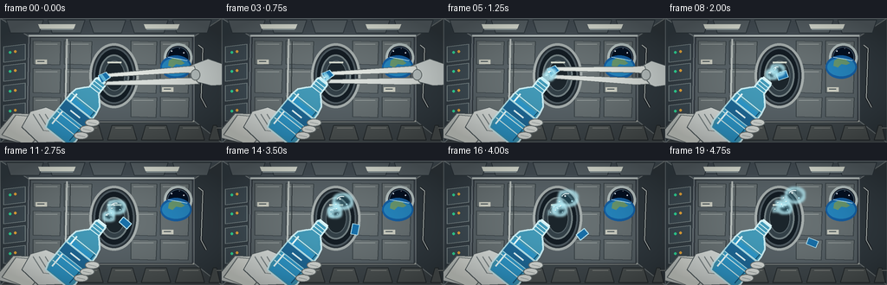
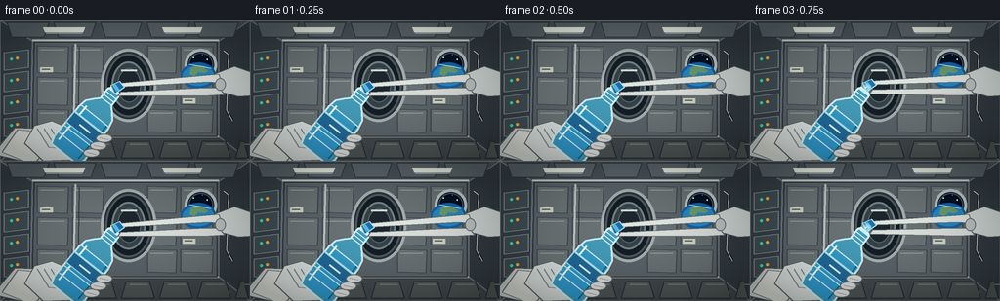
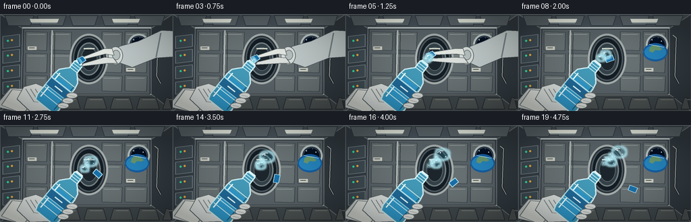
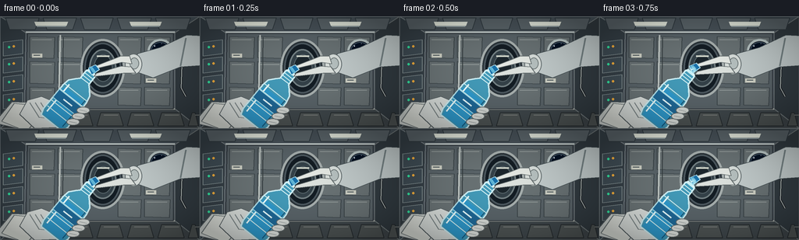
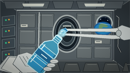
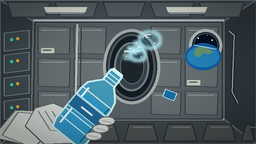

CODING AGENTS AS PIXEL WORLD MODELS
traex/GPT-5.6-Sol · mechanics_0005
点击播放 · 原生 RGB 像素
逐轮保存的候选
回放视频、检查图与代码变化。
每份候选均可单独播放。实际图片检查记录在下方工具轨迹中。
候选 01播放与检查图
点击播放 · 原生 RGB 像素


展开代码变化
--- 上一保存版本
+++ 本次保存版本
@@ -0,0 +1,267 @@
+from pathlib import Path
+import math
+import numpy as np
+from PIL import Image, ImageDraw, ImageFilter, ImageChops
+import artifact_io
+
+W,H,N = 256,144,20
+SS=3
+SW,SH=W*SS,H*SS
+rng=np.random.default_rng(12)
+
+def C(p): return tuple(int(round(v*SS)) for v in p)
+def box(b): return tuple(int(round(v*SS)) for v in b)
+def poly(draw, pts, fill, outline=None, width=1):
+ draw.polygon([C(p) for p in pts], fill=fill)
+ if outline: draw.line([C(p) for p in pts+[pts[0]]], fill=outline, width=width*SS, joint='curve')
+def line(draw, pts, fill, width=1): draw.line([C(p) for p in pts], fill=fill, width=max(1,width*SS), joint='curve')
+def ellipse(draw,b,fill,outline=None,width=1): draw.ellipse(box(b),fill=fill,outline=outline,width=max(1,width*SS))
+
+def background(frame):
+ # softly lit, deep space-station module with a small amount of camera float
+ yy,xx=np.mgrid[0:SH,0:SW]
+ radial=np.sqrt(((xx-SW*.50)/(SW*.78))**2+((yy-SH*.48)/(SH*.82))**2)
+ base=np.zeros((SH,SW,3),dtype=np.float32)
+ base[:,:,0]=44+70*np.clip(1-radial,0,1)+10*(yy/SH)
+ base[:,:,1]=53+72*np.clip(1-radial,0,1)+9*(yy/SH)
+ base[:,:,2]=61+76*np.clip(1-radial,0,1)+7*(yy/SH)
+ # subtle ribbed texture
+ noise=rng.normal(0,1.4,(SH,SW,1))
+ base=np.clip(base+noise,0,255).astype(np.uint8)
+ im=Image.fromarray(base,'RGB')
+ d=ImageDraw.Draw(im)
+ # module's faceted shell: perspective structural panels
+ poly(d,[(0,0),(256,0),(224,21),(33,21)],(72,82,89),(131,140,143),1)
+ poly(d,[(0,144),(256,144),(224,119),(31,119)],(64,72,76),(123,130,130),1)
+ poly(d,[(0,0),(33,21),(31,119),(0,144)],(54,64,71),(118,127,131),1)
+ poly(d,[(256,0),(224,21),(224,119),(256,144)],(50,59,65),(112,120,122),1)
+ # ceiling quilted panels and handrails
+ for x0,x1 in [(7,50),(55,98),(103,145),(150,194),(199,244)]:
+ poly(d,[(x0,2),(x1,2),(x1-5,17),(x0+5,17)],(91,101,106),(48,58,64),1)
+ line(d,[(33,20),(224,20)],(193,202,201),2)
+ line(d,[(36,22),(220,22)],(35,43,48),1)
+ # floor stowage bags and grid
+ for x0 in range(7,247,39):
+ poly(d,[(x0,141),(min(x0+34,254),141),(min(x0+29,250),124),(x0+5,124)],(78,84,84),(38,44,47),1)
+ line(d,[(x0+9,127),(x0+27,127)],(124,128,125),1)
+ line(d,[(31,119),(224,119)],(164,169,164),2)
+ # rear bulkhead and circular hatch
+ poly(d,[(35,22),(222,22),(222,119),(33,119)],(89,99,104),(45,52,58),1)
+ # padded wall panels
+ for yy0,yy1 in [(26,54),(58,87),(91,115)]:
+ for xx0,xx1 in [(38,70),(74,106),(151,181),(185,218)]:
+ poly(d,[(xx0,yy0),(xx1,yy0+1),(xx1-1,yy1),(xx0,yy1-1)],(105,114,116),(59,68,72),1)
+ line(d,[(xx0+3,yy0+4),(xx1-4,yy0+4)],(147,155,154),1)
+ # hatch opening in back, behind foreground bottle
+ ellipse(d,(103,29,160,104),(43,52,58),(167,175,174),3)
+ ellipse(d,(108,34,155,99),(20,29,36),(77,89,96),2)
+ # tunnel depth rings
+ ellipse(d,(114,42,149,91),(52,65,72),(115,128,131),2)
+ ellipse(d,(120,49,144,84),(28,38,44),(91,105,110),1)
+ line(d,[(124,51),(140,51)],(214,219,207),2)
+ # left lockers / controls
+ for y in [33,55,78,101]:
+ poly(d,[(4,y),(29,y-3),(29,y+15),(4,y+18)],(63,76,84),(130,143,145),1)
+ ellipse(d,(10,y+5,13,y+8),(50,226,159))
+ ellipse(d,(16,y+4,19,y+7),(241,173,61))
+ # a cool luminous window on upper right, Earth beyond
+ ellipse(d,(189,29,222,62),(24,29,42),(184,197,196),3)
+ ellipse(d,(193,33,218,58),(4,16,34),(69,92,108),1)
+ # earth crescent/limb
+ ellipse(d,(185,43,221,70),(22,96,164))
+ ellipse(d,(187,46,219,67),(38,135,192))
+ poly(d,[(195,49),(200,46),(207,47),(213,52),(209,54),(203,53),(199,57),(194,55)],(107,154,112))
+ line(d,[(194,45),(216,49)],(200,238,255),1)
+ # stars in window
+ for sx,sy in [(198,38),(212,40),(207,35)]: ellipse(d,(sx-.5,sy-.5,sx+.5,sy+.5),(235,243,255))
+ # overhead strip lights
+ for x0,x1 in [(44,87),(166,207)]:
+ poly(d,[(x0,7),(x1,7),(x1-2,12),(x0+2,12)],(231,236,224))
+ line(d,[(x0+3,13),(x1-3,13)],(163,179,181),1)
+ # cables and grab rails add specificity
+ line(d,[(229,31),(234,35),(232,92),(238,103)],(35,40,44),3)
+ line(d,[(229,31),(234,35),(232,92),(238,103)],(187,195,192),1)
+ line(d,[(77,24),(75,111)],(188,195,192),2)
+ line(d,[(81,27),(80,108)],(49,57,60),1)
+ # small labels (abstract station markings)
+ for bx,by in [(41,48),(187,80),(42,109)]:
+ d.rectangle(box((bx,by,bx+13,by+5)),fill=(207,209,197))
+ line(d,[(bx+2,by+2),(bx+10,by+2)],(60,72,78),1)
+ return im
+
+def axis_point(base,axis,perp,q,w): return (base[0]+axis[0]*q+perp[0]*w,base[1]+axis[1]*q+perp[1]*w)
+
+def draw_arm_and_bottle(im, f):
+ d=ImageDraw.Draw(im,'RGBA')
+ base=(66,137); axis=(0.62,-0.785); perp=(0.785,0.62)
+ # forearm and glove behind bottle
+ poly(d,[(-8,137),(15,110),(44,111),(67,132),(61,153)],(205,211,207,255),(83,92,96,255),1)
+ poly(d,[(2,135),(18,112),(38,114),(47,133),(34,148)],(222,225,219,255),(109,118,119,255),1)
+ # glove palm cupped around lower bottle
+ poly(d,[(25,126),(35,108),(53,103),(74,112),(83,127),(72,143),(44,144)],(217,222,219,255),(88,98,101,255),1)
+ for off in range(3):
+ line(d,[(38+off*7,111),(50+off*7,130),(68+off*4,132)],(126,136,137,180),1)
+ # bottle outline path in local coordinates
+ profile=[(0,-17),(9,-20),(47,-19),(57,-17),(64,-11),(68,-7),(79,-7),(82,-6),
+ (82,6),(79,7),(68,7),(64,11),(57,17),(47,19),(9,20),(0,17)]
+ pts=[axis_point(base,axis,perp,q,w) for q,w in profile]
+ # dark glass shadow then translucent body
+ poly(d,pts,(67,154,184,105),(204,238,244,235),2)
+ # water inside bottle lower 70%; clipped-looking quadrilateral with meniscus
+ water=[axis_point(base,axis,perp,q,w) for q,w in [(2,-15),(43,-17),(47,-14),(47,14),(43,17),(2,15)]]
+ poly(d,water,(47,153,203,115))
+ # moving glint through clear bottle
+ line(d,[axis_point(base,axis,perp,8,-14),axis_point(base,axis,perp,53,-13)],(238,255,255,195),2)
+ line(d,[axis_point(base,axis,perp,5,14),axis_point(base,axis,perp,49,16)],(21,88,124,130),1)
+ # molded grip ridges
+ for q in [14,23,32,41,50]:
+ p1=axis_point(base,axis,perp,q,-18); p2=axis_point(base,axis,perp,q,18)
+ line(d,[p1,p2],(208,239,241,125),1)
+ # label band
+ label=[axis_point(base,axis,perp,q,w) for q,w in [(27,-19),(40,-19),(40,19),(27,19)]]
+ poly(d,label,(31,104,150,190),(163,218,231,190),1)
+ # little H2O-like white mark, rendered as graphic bars for readability
+ p=axis_point(base,axis,perp,33,-7); p2=axis_point(base,axis,perp,33,7)
+ line(d,[p,p2],(228,247,248,230),2)
+ # bottle neck rings
+ for q in [69,73,77,81]:
+ line(d,[axis_point(base,axis,perp,q,-7.5),axis_point(base,axis,perp,q,7.5)],(213,241,244,220),1)
+ mouth=axis_point(base,axis,perp,84,0)
+ p1=axis_point(base,axis,perp,83,-6); p2=axis_point(base,axis,perp,83,6)
+ line(d,[p1,p2],(224,251,255,255),2)
+ # foreground fingers wrapping bottle
+ for i,(q,w) in enumerate([(18,20),(28,21),(38,21)]):
+ c=axis_point(base,axis,perp,q,w)
+ ellipse(d,(c[0]-8,c[1]-4,c[0]+9,c[1]+5),(222-i*4,226-i*4,222-i*4,255),(104,113,114,255),1)
+ line(d,[(c[0]-4,c[1]),(c[0]+5,c[1]+2)],(157,165,164,180),1)
+ return mouth,axis,perp
+
+def draw_opening_hand_and_cap(im,f,mouth,axis,perp):
+ d=ImageDraw.Draw(im,'RGBA')
+ # cap separates during the first second, then coasts down-right in microgravity
+ sep=max(0.0,(f-2)/3.0)
+ sep=min(sep,1.0)
+ if f<=5:
+ cq=86+sep*10; cw=0
+ else:
+ age=f-5
+ cap0=axis_point((66,137),axis,perp,96,0)
+ capc=(cap0[0]+age*3.15,cap0[1]+age*1.25+0.08*age*age)
+ cq=None
+ if cq is not None: capc=axis_point((66,137),axis,perp,cq,cw)
+ # hand reaching in, pinching/twisting; retreats rapidly after release
+ if f<=7:
+ retreat=max(0,f-4)*8
+ # cuff from right edge, articulated white glove
+ poly(d,[(260,54+retreat*.25),(240,47+retreat*.30),(219+retreat,55+retreat*.15),
+ (221+retreat,72+retreat*.10),(244,78+retreat*.15),(260,77)],
+ (207,214,212,255),(78,88,91,255),1)
+ # index finger and thumb converge around cap
+ poly(d,[(224+retreat,55),(211+retreat,56),(capc[0]+2,capc[1]-5),(capc[0]-1,capc[1]-1),
+ (213+retreat,63),(227+retreat,64)],(226,230,225,255),(101,110,111,255),1)
+ poly(d,[(224+retreat,69),(210+retreat,69),(capc[0]+4,capc[1]+4),(capc[0]+1,capc[1]+8),
+ (214+retreat,77),(230+retreat,76)],(218,223,219,255),(101,110,111,255),1)
+ # glove joint pads
+ ellipse(d,(220+retreat,59,231+retreat,72),(186,195,194,230),(104,113,113,220),1)
+ # blue screw cap, in front of fingers
+ ang=0.35*f
+ # oriented cap as a small ribbed cylinder (screen-space, convincing at this scale)
+ cx,cy=capc
+ if f<=5:
+ # stays aligned with tilted bottle
+ corners=[(cx-6,cy-3),(cx+3,cy-7),(cx+8,cy-1),(cx-2,cy+6)]
+ else:
+ ca,sa=math.cos(ang),math.sin(ang)
+ corners=[]
+ for x,y in [(-6,-4),(6,-4),(6,4),(-6,4)]: corners.append((cx+x*ca-y*sa,cy+x*sa+y*ca))
+ poly(d,corners,(25,112,169,255),(181,226,239,255),1)
+ for k in [-3,0,3]:
+ if f<=5: line(d,[(cx-3+k*.5,cy-4),(cx+2+k*.5,cy+3)],(103,186,216,220),1)
+ return capc
+
+def add_water_blob(im, cx,cy,rx,ry,phase, satellites=3):
+ # Build smooth, connected metaball-ish mask out of oscillating lobes.
+ mask=Image.new('L',(SW,SH),0); md=ImageDraw.Draw(mask)
+ md.ellipse(box((cx-rx,cy-ry,cx+rx,cy+ry)),fill=235)
+ for j in range(satellites):
+ a=phase+j*2.17
+ ox=math.cos(a)*rx*(0.45+0.08*j)
+ oy=math.sin(a*1.23)*ry*(0.42+0.06*j)
+ rr=rx*(0.48-0.07*j)
+ rry=ry*(0.46-0.06*j)
+ md.ellipse(box((cx+ox-rr,cy+oy-rry,cx+ox+rr,cy+oy+rry)),fill=235)
+ mask=mask.filter(ImageFilter.GaussianBlur(1.1*SS))
+ # optical shadow/refraction halo
+ halo=mask.filter(ImageFilter.GaussianBlur(2.0*SS))
+ dark=Image.new('RGBA',(SW,SH),(5,43,57,0)); dark.putalpha(halo.point(lambda x:int(x*.16)))
+ im.alpha_composite(dark)
+ # translucent blue interior with a faint lower-edge tint
+ arr=np.zeros((SH,SW,4),dtype=np.uint8)
+ arr[:,:,0]=91; arr[:,:,1]=201; arr[:,:,2]=231
+ ma=np.asarray(mask,dtype=np.float32)
+ arr[:,:,3]=np.clip(ma*.22,0,60).astype(np.uint8)
+ im.alpha_composite(Image.fromarray(arr,'RGBA'))
+ # bright rim: dilated minus eroded
+ outer=mask.filter(ImageFilter.MaxFilter(11))
+ inner=mask.filter(ImageFilter.MinFilter(11))
+ rim=ImageChops.subtract(outer,inner).point(lambda x:min(205,int(x*.82)))
+ edge=Image.new('RGBA',(SW,SH),(188,242,252,0)); edge.putalpha(rim)
+ im.alpha_composite(edge)
+ # specular crescent and pin highlights, clipped by mask notionally
+ hd=ImageDraw.Draw(im,'RGBA')
+ arcbox=box((cx-rx*.72,cy-ry*.72,cx+rx*.54,cy+ry*.45))
+ hd.arc(arcbox,196,290,fill=(242,255,255,235),width=max(2,SS))
+ ellipse(hd,(cx-rx*.42,cy-ry*.45,cx-rx*.23,cy-ry*.23),(245,255,255,210))
+ ellipse(hd,(cx+rx*.36,cy+ry*.33,cx+rx*.50,cy+ry*.48),(177,235,248,180))
+
+def draw_water(im,f,mouth,axis,perp):
+ if f<3: return
+ # wet meniscus appears precisely at mouth before release
+ age=f-3
+ s=min(1.0,age/3)
+ neckc=(mouth[0]+axis[0]*(2+min(age,7)*1.15),mouth[1]+axis[1]*(2+min(age,7)*1.15))
+ if f<11:
+ add_water_blob(im,neckc[0],neckc[1],2.5+3.5*s,2+2.7*s,0.55*f,2)
+ # first large irregular free-floating mass
+ if f>=5:
+ a=f-5
+ cx=mouth[0]+axis[0]*(9+2.95*a)+0.45*math.sin(a*.55)
+ cy=mouth[1]+axis[1]*(9+2.25*a)+1.25*math.sin(a*.48)
+ rx=5.0+min(a,8)*.68
+ ry=4.2+min(a,8)*.48
+ add_water_blob(im,cx,cy,rx,ry,0.42*a,4)
+ # second blob follows and stays visibly separate
+ if f>=9:
+ a=f-9
+ cx=mouth[0]+axis[0]*(9+2.2*a)-1.1*math.sin(a*.6)
+ cy=mouth[1]+axis[1]*(8+1.65*a)+2.0+math.cos(a*.55)
+ add_water_blob(im,cx,cy,4.8+min(a,6)*.42,3.8+min(a,6)*.35,1.3+.5*a,3)
+ # tiny spherical droplets splitting off in different directions
+ starts=[(7,1.5,-1.2,0.3),(10,2.25,0.35,2.2),(12,1.35,-2.15,-1.3),(14,2.65,-.65,1.1),(16,1.85,1.1,-2.5)]
+ for st,vx,vy,side in starts:
+ if f>=st:
+ a=f-st
+ x=mouth[0]+axis[0]*(12+vx*a)+perp[0]*side
+ y=mouth[1]+axis[1]*(12+vx*a)+perp[1]*side+vy*a*.28
+ r=1.4+0.15*min(a,5)
+ add_water_blob(im,x,y,r,r*.85,0.7*a,1)
+
+def frame_render(f):
+ im=background(f).convert('RGBA')
+ mouth,axis,perp=draw_arm_and_bottle(im,f)
+ draw_opening_hand_and_cap(im,f,mouth,axis,perp)
+ draw_water(im,f,mouth,axis,perp)
+ # fine cinematic vignette and cool highlight wash
+ arr=np.asarray(im.convert('RGB')).astype(np.float32)
+ yy,xx=np.mgrid[0:SH,0:SW]
+ vig=np.clip(1-0.18*((xx-SW/2)/(SW/2))**2-0.20*((yy-SH/2)/(SH/2))**2,.72,1)
+ arr*=vig[:,:,None]
+ arr=np.clip(arr,0,255).astype(np.uint8)
+ out=Image.fromarray(arr).resize((W,H),Image.Resampling.LANCZOS)
+ return np.asarray(out,dtype=np.uint8)
+
+def main():
+ frames=np.stack([frame_render(f) for f in range(N)],axis=0)
+ artifact_io.save(frames,Path(__file__).resolve().parent)
+
+if __name__=='__main__': main()
候选 02播放与检查图
点击播放 · 原生 RGB 像素


展开代码变化
--- 上一保存版本
+++ 本次保存版本
@@ -152,17 +152,20 @@
# hand reaching in, pinching/twisting; retreats rapidly after release
if f<=7:
retreat=max(0,f-4)*8
- # cuff from right edge, articulated white glove
- poly(d,[(260,54+retreat*.25),(240,47+retreat*.30),(219+retreat,55+retreat*.15),
- (221+retreat,72+retreat*.10),(244,78+retreat*.15),(260,77)],
- (207,214,212,255),(78,88,91,255),1)
- # index finger and thumb converge around cap
- poly(d,[(224+retreat,55),(211+retreat,56),(capc[0]+2,capc[1]-5),(capc[0]-1,capc[1]-1),
- (213+retreat,63),(227+retreat,64)],(226,230,225,255),(101,110,111,255),1)
- poly(d,[(224+retreat,69),(210+retreat,69),(capc[0]+4,capc[1]+4),(capc[0]+1,capc[1]+8),
- (214+retreat,77),(230+retreat,76)],(218,223,219,255),(101,110,111,255),1)
- # glove joint pads
- ellipse(d,(220+retreat,59,231+retreat,72),(186,195,194,230),(104,113,113,220),1)
+ # A foreshortened suit sleeve comes from the upper-right, placing the
+ # glove close enough that its pinching fingers retain human proportions.
+ poly(d,[(260,25),(239,24),(205,40),(176+retreat,48),(171+retreat,70),
+ (196+retreat*.35,79),(231,65),(260,63)],
+ (193,202,202,255),(70,81,85,255),1)
+ line(d,[(238,28),(231,64)],(117,130,132,230),2)
+ # rounded palm and visible fabric joint pad
+ ellipse(d,(160+retreat,48,182+retreat,75),(216,222,219,255),(96,106,108,255),1)
+ ellipse(d,(166+retreat,53,178+retreat,68),(183,193,192,220),(112,122,122,210),1)
+ # index finger and thumb converge naturally around the small cap
+ poly(d,[(166+retreat,51),(155+retreat,51),(capc[0]+2,capc[1]-5),(capc[0]-1,capc[1]-1),
+ (156+retreat,59),(169+retreat,61)],(228,232,227,255),(101,110,111,255),1)
+ poly(d,[(168+retreat,65),(155+retreat,64),(capc[0]+4,capc[1]+4),(capc[0]+1,capc[1]+8),
+ (158+retreat,73),(174+retreat,73)],(220,225,221,255),(101,110,111,255),1)
# blue screw cap, in front of fingers
ang=0.35*f
# oriented cap as a small ribbed cylinder (screen-space, convincing at this scale)
可观测工具轨迹
实际执行的命令与返回图片。
命令 1exit 0
/bin/bash -lc "cat prompt.txt && printf '\\n---RULES---\\n' && cat GENERATION_RULES.md && printf '\\n---SPEC---\\n' && cat task_spec.json"
命令 2exit 0
/bin/bash -lc "find . -maxdepth 2 -type f -printf '%p\\n' | sort"
命令 3exit 0
/bin/bash -lc 'cat artifact_io.py'
命令 4exit 0
/bin/bash -lc "cat > generate.py <<'PY'
from pathlib import Path
import math
import numpy as np
from PIL import Image, ImageDraw, ImageFilter, ImageChops
import artifact_io
W,H,N = 256,144,20
SS=3
SW,SH=W*SS,H*SS
rng=np.random.default_rng(12)
def C(p): return tuple(int(round(v*SS)) for v in p)
def box(b): return tuple(int(round(v*SS)) for v in b)
def poly(draw, pts, fill, outline=None, width=1):
draw.polygon([C(p) for p in pts], fill=fill)
if outline: draw.line([C(p) for p in pts+[pts[0]]], fill=outline, width=width*SS, joint='curve')
def line(draw, pts, fill, width=1): draw.line([C(p) for p in pts], fill=fill, width=max(1,width*SS), joint='curve')
def ellipse(draw,b,fill,outline=None,width=1): draw.ellipse(box(b),fill=fill,outline=outline,width=max(1,width*SS))
def background(frame):
# softly lit, deep space-station module with a small amount of camera float
yy,xx=np.mgrid[0:SH,0:SW]
radial=np.sqrt(((xx-SW*.50)/(SW*.78))**2+((yy-SH*.48)/(SH*.82))**2)
base=np.zeros((SH,SW,3),dtype=np.float32)
base[:,:,0]=44+70*np.clip(1-radial,0,1)+10*(yy/SH)
base[:,:,1]=53+72*np.clip(1-radial,0,1)+9*(yy/SH)
base[:,:,2]=61+76*np.clip(1-radial,0,1)+7*(yy/SH)
# subtle ribbed texture
noise=rng.normal(0,1.4,(SH,SW,1))
base=np.clip(base+noise,0,255).astype(np.uint8)
im=Image.fromarray(base,'RGB')
d=ImageDraw.Draw(im)
# module's faceted shell: perspective structural panels
poly(d,[(0,0),(256,0),(224,21),(33,21)],(72,82,89),(131,140,143),1)
poly(d,[(0,144),(256,144),(224,119),(31,119)],(64,72,76),(123,130,130),1)
poly(d,[(0,0),(33,21),(31,119),(0,144)],(54,64,71),(118,127,131),1)
poly(d,[(256,0),(224,21),(224,119),(256,144)],(50,59,65),(112,120,122),1)
# ceiling quilted panels and handrails
for x0,x1 in [(7,50),(55,98),(103,145),(150,194),(199,244)]:
poly(d,[(x0,2),(x1,2),(x1-5,17),(x0+5,17)],(91,101,106),(48,58,64),1)
line(d,[(33,20),(224,20)],(193,202,201),2)
line(d,[(36,22),(220,22)],(35,43,48),1)
# floor stowage bags and grid
for x0 in range(7,247,39):
poly(d,[(x0,141),(min(x0+34,254),141),(min(x0+29,250),124),(x0+5,124)],(78,84,84),(38,44,47),1)
line(d,[(x0+9,127),(x0+27,127)],(124,128,125),1)
line(d,[(31,119),(224,119)],(164,169,164),2)
# rear bulkhead and circular hatch
poly(d,[(35,22),(222,22),(222,119),(33,119)],(89,99,104),(45,52,58),1)
# padded wall panels
for yy0,yy1 in [(26,54),(58,87),(91,115)]:
for xx0,xx1 in [(38,70),(74,106),(151,181),(185,218)]:
poly(d,[(xx0,yy0),(xx1,yy0+1),(xx1-1,yy1),(xx0,yy1-1)],(105,114,116),(59,68,72),1)
line(d,[(xx0+3,yy0+4),(xx1-4,yy0+4)],(147,155,154),1)
# hatch opening in back, behind foreground bottle
ellipse(d,(103,29,160,104),(43,52,58),(167,175,174),3)
ellipse(d,(108,34,155,99),(20,29,36),(77,89,96),2)
# tunnel depth rings
ellipse(d,(114,42,149,91),(52,65,72),(115,128,131),2)
ellipse(d,(120,49,144,84),(28,38,44),(91,105,110),1)
line(d,[(124,51),(140,51)],(214,219,207),2)
# left lockers / controls
for y in [33,55,78,101]:
poly(d,[(4,y),(29,y-3),(29,y+15),(4,y+18)],(63,76,84),(130,143,145),1)
ellipse(d,(10,y+5,13,y+8),(50,226,159))
ellipse(d,(16,y+4,19,y+7),(241,173,61))
# a cool luminous window on upper right, Earth beyond
ellipse(d,(189,29,222,62),(24,29,42),(184,197,196),3)
ellipse(d,(193,33,218,58),(4,16,34),(69,92,108),1)
# earth crescent/limb
ellipse(d,(185,43,221,70),(22,96,164))
ellipse(d,(187,46,219,67),(38,135,192))
poly(d,[(195,49),(200,46),(207,47),(213,52),(209,54),(203,53),(199,57),(194,55)],(107,154,112))
line(d,[(194,45),(216,49)],(200,238,255),1)
# stars in window
for sx,sy in [(198,38),(212,40),(207,35)]: ellipse(d,(sx-.5,sy-.5,sx+.5,sy+.5),(235,243,255))
# overhead strip lights
for x0,x1 in [(44,87),(166,207)]:
poly(d,[(x0,7),(x1,7),(x1-2,12),(x0+2,12)],(231,236,224))
line(d,[(x0+3,13),(x1-3,13)],(163,179,181),1)
# cables and grab rails add specificity
line(d,[(229,31),(234,35),(232,92),(238,103)],(35,40,44),3)
line(d,[(229,31),(234,35),(232,92),(238,103)],(187,195,192),1)
line(d,[(77,24),(75,111)],(188,195,192),2)
line(d,[(81,27),(80,108)],(49,57,60),1)
# small labels (abstract station markings)
for bx,by in [(41,48),(187,80),(42,109)]:
d.rectangle(box((bx,by,bx+13,by+5)),fill=(207,209,197))
line(d,[(bx+2,by+2),(bx+10,by+2)],(60,72,78),1)
return im
def axis_point(base,axis,perp,q,w): return (base[0]+axis[0]*q+perp[0]*w,base[1]+axis[1]*q+perp[1]*w)
def draw_arm_and_bottle(im, f):
d=ImageDraw.Draw(im,'RGBA')
base=(66,137); axis=(0.62,-0.785); perp=(0.785,0.62)
# forearm and glove behind bottle
poly(d,[(-8,137),(15,110),(44,111),(67,132),(61,153)],(205,211,207,255),(83,92,96,255),1)
poly(d,[(2,135),(18,112),(38,114),(47,133),(34,148)],(222,225,219,255),(109,118,119,255),1)
# glove palm cupped around lower bottle
poly(d,[(25,126),(35,108),(53,103),(74,112),(83,127),(72,143),(44,144)],(217,222,219,255),(88,98,101,255),1)
for off in range(3):
line(d,[(38+off*7,111),(50+off*7,130),(68+off*4,132)],(126,136,137,180),1)
# bottle outline path in local coordinates
profile=[(0,-17),(9,-20),(47,-19),(57,-17),(64,-11),(68,-7),(79,-7),(82,-6),
(82,6),(79,7),(68,7),(64,11),(57,17),(47,19),(9,20),(0,17)]
pts=[axis_point(base,axis,perp,q,w) for q,w in profile]
# dark glass shadow then translucent body
poly(d,pts,(67,154,184,105),(204,238,244,235),2)
# water inside bottle lower 70%; clipped-looking quadrilateral with meniscus
water=[axis_point(base,axis,perp,q,w) for q,w in [(2,-15),(43,-17),(47,-14),(47,14),(43,17),(2,15)]]
poly(d,water,(47,153,203,115))
# moving glint through clear bottle
line(d,[axis_point(base,axis,perp,8,-14),axis_point(base,axis,perp,53,-13)],(238,255,255,195),2)
line(d,[axis_point(base,axis,perp,5,14),axis_point(base,axis,perp,49,16)],(21,88,124,130),1)
# molded grip ridges
for q in [14,23,32,41,50]:
p1=axis_point(base,axis,perp,q,-18); p2=axis_point(base,axis,perp,q,18)
line(d,[p1,p2],(208,239,241,125),1)
# label band
label=[axis_point(base,axis,perp,q,w) for q,w in [(27,-19),(40,-19),(40,19),(27,19)]]
poly(d,label,(31,104,150,190),(163,218,231,190),1)
# little H2O-like white mark, rendered as graphic bars for readability
p=axis_point(base,axis,perp,33,-7); p2=axis_point(base,axis,perp,33,7)
line(d,[p,p2],(228,247,248,230),2)
# bottle neck rings
for q in [69,73,77,81]:
line(d,[axis_point(base,axis,perp,q,-7.5),axis_point(base,axis,perp,q,7.5)],(213,241,244,220),1)
mouth=axis_point(base,axis,perp,84,0)
p1=axis_point(base,axis,perp,83,-6); p2=axis_point(base,axis,perp,83,6)
line(d,[p1,p2],(224,251,255,255),2)
# foreground fingers wrapping bottle
for i,(q,w) in enumerate([(18,20),(28,21),(38,21)]):
c=axis_point(base,axis,perp,q,w)
ellipse(d,(c[0]-8,c[1]-4,c[0]+9,c[1]+5),(222-i*4,226-i*4,222-i*4,255),(104,113,114,255),1)
line(d,[(c[0]-4,c[1]),(c[0]+5,c[1]+2)],(157,165,164,180),1)
return mouth,axis,perp
def draw_opening_hand_and_cap(im,f,mouth,axis,perp):
d=ImageDraw.Draw(im,'RGBA')
# cap separates during the first second, then coasts down-right in microgravity
sep=max(0.0,(f-2)/3.0)
sep=min(sep,1.0)
if f<=5:
cq=86+sep*10; cw=0
else:
age=f-5
cap0=axis_point((66,137),axis,perp,96,0)
capc=(cap0[0]+age*3.15,cap0[1]+age*1.25+0.08*age*age)
cq=None
if cq is not None: capc=axis_point((66,137),axis,perp,cq,cw)
# hand reaching in, pinching/twisting; retreats rapidly after release
if f<=7:
retreat=max(0,f-4)*8
# cuff from right edge, articulated white glove
poly(d,[(260,54+retreat*.25),(240,47+retreat*.30),(219+retreat,55+retreat*.15),
(221+retreat,72+retreat*.10),(244,78+retreat*.15),(260,77)],
(207,214,212,255),(78,88,91,255),1)
# index finger and thumb converge around cap
poly(d,[(224+retreat,55),(211+retreat,56),(capc[0]+2,capc[1]-5),(capc[0]-1,capc[1]-1),
(213+retreat,63),(227+retreat,64)],(226,230,225,255),(101,110,111,255),1)
poly(d,[(224+retreat,69),(210+retreat,69),(capc[0]+4,capc[1]+4),(capc[0]+1,capc[1]+8),
(214+retreat,77),(230+retreat,76)],(218,223,219,255),(101,110,111,255),1)
# glove joint pads
ellipse(d,(220+retreat,59,231+retreat,72),(186,195,194,230),(104,113,113,220),1)
# blue screw cap, in front of fingers
ang=0.35*f
# oriented cap as a small ribbed cylinder (screen-space, convincing at this scale)
cx,cy=capc
if f<=5:
# stays aligned with tilted bottle
corners=[(cx-6,cy-3),(cx+3,cy-7),(cx+8,cy-1),(cx-2,cy+6)]
else:
ca,sa=math.cos(ang),math.sin(ang)
corners=[]
for x,y in [(-6,-4),(6,-4),(6,4),(-6,4)]: corners.append((cx+x*ca-y*sa,cy+x*sa+y*ca))
poly(d,corners,(25,112,169,255),(181,226,239,255),1)
for k in [-3,0,3]:
if f<=5: line(d,[(cx-3+k*.5,cy-4),(cx+2+k*.5,cy+3)],(103,186,216,220),1)
return capc
def add_water_blob(im, cx,cy,rx,ry,phase, satellites=3):
# Build smooth, connected metaball-ish mask out of oscillating lobes.
mask=Image.new('L',(SW,SH),0); md=ImageDraw.Draw(mask)
md.ellipse(box((cx-rx,cy-ry,cx+rx,cy+ry)),fill=235)
for j in range(satellites):
a=phase+j*2.17
ox=math.cos(a)*rx*(0.45+0.08*j)
oy=math.sin(a*1.23)*ry*(0.42+0.06*j)
rr=rx*(0.48-0.07*j)
rry=ry*(0.46-0.06*j)
md.ellipse(box((cx+ox-rr,cy+oy-rry,cx+ox+rr,cy+oy+rry)),fill=235)
mask=mask.filter(ImageFilter.GaussianBlur(1.1*SS))
# optical shadow/refraction halo
halo=mask.filter(ImageFilter.GaussianBlur(2.0*SS))
dark=Image.new('RGBA',(SW,SH),(5,43,57,0)); dark.putalpha(halo.point(lambda x:int(x*.16)))
im.alpha_composite(dark)
# translucent blue interior with a faint lower-edge tint
arr=np.zeros((SH,SW,4),dtype=np.uint8)
arr[:,:,0]=91; arr[:,:,1]=201; arr[:,:,2]=231
ma=np.asarray(mask,dtype=np.float32)
arr[:,:,3]=np.clip(ma*.22,0,60).astype(np.uint8)
im.alpha_composite(Image.fromarray(arr,'RGBA'))
# bright rim: dilated minus eroded
outer=mask.filter(ImageFilter.MaxFilter(11))
inner=mask.filter(ImageFilter.MinFilter(11))
rim=ImageChops.subtract(outer,inner).point(lambda x:min(205,int(x*.82)))
edge=Image.new('RGBA',(SW,SH),(188,242,252,0)); edge.putalpha(rim)
im.alpha_composite(edge)
# specular crescent and pin highlights, clipped by mask notionally
hd=ImageDraw.Draw(im,'RGBA')
arcbox=box((cx-rx*.72,cy-ry*.72,cx+rx*.54,cy+ry*.45))
hd.arc(arcbox,196,290,fill=(242,255,255,235),width=max(2,SS))
ellipse(hd,(cx-rx*.42,cy-ry*.45,cx-rx*.23,cy-ry*.23),(245,255,255,210))
ellipse(hd,(cx+rx*.36,cy+ry*.33,cx+rx*.50,cy+ry*.48),(177,235,248,180))
def draw_water(im,f,mouth,axis,perp):
if f<3: return
# wet meniscus appears precisely at mouth before release
age=f-3
s=min(1.0,age/3)
neckc=(mouth[0]+axis[0]*(2+min(age,7)*1.15),mouth[1]+axis[1]*(2+min(age,7)*1.15))
if f<11:
add_water_blob(im,neckc[0],neckc[1],2.5+3.5*s,2+2.7*s,0.55*f,2)
# first large irregular free-floating mass
if f>=5:
a=f-5
cx=mouth[0]+axis[0]*(9+2.95*a)+0.45*math.sin(a*.55)
cy=mouth[1]+axis[1]*(9+2.25*a)+1.25*math.sin(a*.48)
rx=5.0+min(a,8)*.68
ry=4.2+min(a,8)*.48
add_water_blob(im,cx,cy,rx,ry,0.42*a,4)
# second blob follows and stays visibly separate
if f>=9:
a=f-9
cx=mouth[0]+axis[0]*(9+2.2*a)-1.1*math.sin(a*.6)
cy=mouth[1]+axis[1]*(8+1.65*a)+2.0+math.cos(a*.55)
add_water_blob(im,cx,cy,4.8+min(a,6)*.42,3.8+min(a,6)*.35,1.3+.5*a,3)
# tiny spherical droplets splitting off in different directions
starts=[(7,1.5,-1.2,0.3),(10,2.25,0.35,2.2),(12,1.35,-2.15,-1.3),(14,2.65,-.65,1.1),(16,1.85,1.1,-2.5)]
for st,vx,vy,side in starts:
if f>=st:
a=f-st
x=mouth[0]+axis[0]*(12+vx*a)+perp[0]*side
y=mouth[1]+axis[1]*(12+vx*a)+perp[1]*side+vy*a*.28
r=1.4+0.15*min(a,5)
add_water_blob(im,x,y,r,r*.85,0.7*a,1)
def frame_render(f):
im=background(f).convert('RGBA')
mouth,axis,perp=draw_arm_and_bottle(im,f)
draw_opening_hand_and_cap(im,f,mouth,axis,perp)
draw_water(im,f,mouth,axis,perp)
# fine cinematic vignette and cool highlight wash
arr=np.asarray(im.convert('RGB')).astype(np.float32)
yy,xx=np.mgrid[0:SH,0:SW]
vig=np.clip(1-0.18*((xx-SW/2)/(SW/2))**2-0.20*((yy-SH/2)/(SH/2))**2,.72,1)
arr*=vig[:,:,None]
arr=np.clip(arr,0,255).astype(np.uint8)
out=Image.fromarray(arr).resize((W,H),Image.Resampling.LANCZOS)
return np.asarray(out,dtype=np.uint8)
def main():
frames=np.stack([frame_render(f) for f in range(N)],axis=0)
artifact_io.save(frames,Path(__file__).resolve().parent)
if __name__=='__main__': main()
PY
python generate.py"命令 5exit 0
/bin/bash -lc "python generate.py && python - <<'PY'
import numpy as np, json
z=np.load('pixels.npz')['pixels']
s=json.load(open('task_spec.json'))
print('pixels',z.shape,z.dtype,'expected', (s['height'],s['width'],s['frames']))
print('frames',len(list(__import__('pathlib').Path('frames').glob('*.png'))))
PY"视觉工具实际返回图片 1

视觉工具实际返回图片 2

视觉工具实际返回图片 3
视觉工具实际返回图片 4

视觉工具实际返回图片 5

保存候选 2 份；完成命令 5 次；可验证图片返回 5 张。原始 API 响应与完整日志保留在本地。